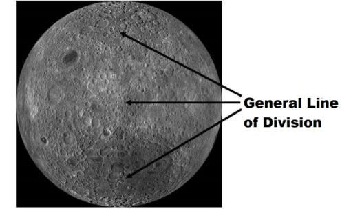
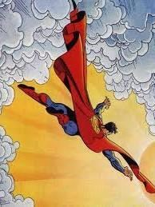

The Quran is a book of great knowledge. It proves by itself that it is a book from the true Creator. But, the Quran is easy to understand, as it says: And We have indeed made the Qur'an easy to understand and remember; then is there any that will receive admonition? Thus, the Quran should be followed according to its obvious meanings. It should also be memorized so that the verses can shape the mind.
কুরআন একটি মহান জ্ঞানের গ্রন্থ। এটি নিজেই প্রমাণ করে যে এটি প্রকৃত স্রষ্টার একটি গ্রন্থ। কিন্তু, কুরআন বোঝার জন্য সহজ, কারণ এটি বলে: এবং আমরা সত্যই কুরআনকে বোঝা ও মনে রাখার জন্য সহজ করে দিয়েছি; তাহলে উপদেশ গ্রহণকারী কেউ আছে কি? তাই কুরআনকে এর সুস্পষ্ট অর্থ অনুযায়ী অনুসরণ করতে হবে। এটিও মুখস্থ করা উচিত যাতে আয়াতগুলি মনের গঠন করতে পারে।
Tafsir of the Surah Section 1 of Chapter 54 [Verse1-8]: Following the Lusts
অধ্যায় 54 এর সূরা 1 ধারার তাফসির [আয়াত 1-8]: লালসার অনুসরণ
The Hour is nigh, and the moon is cleft asunder. But if they see a sign, they turn away and say, "This is transient magic." Remarks:
কেয়ামত ঘনিয়ে এসেছে, আর চাঁদ বিদীর্ণ হয়ে গেছে। অতঃপর তারা কোন নিদর্শন দেখলে মুখ ফিরিয়ে নেয় এবং বলে, এটা ক্ষণস্থায়ী যাদু। মন্তব্য:
We find only a few Hadiths in respect of splitting the Moon: ―This Hadith has been transmitted on the authority of Abdullah b. Mas'ud: We were along with Allah's Messenger (pbuh) at Mina that the Moon was split up into two. One of its parts was behind the mountain and the other one was on this side of the mountain. Allah's Messenger (pbuh) said to us: Bear witness to this‖ [Muslim]
চাঁদ দ্বিখণ্ডিত হওয়ার ব্যাপারে আমরা মাত্র কয়েকটি হাদিস পাই: “এই হাদিসটি আবদুল্লাহ (র) থেকে প্রেরিত হয়েছে। মাসউদ: আমরা মিনায় রাসুলুল্লাহ (সাঃ) এর সাথে ছিলাম যে চাঁদ দুই ভাগ হয়ে গেছে। এর একটি অংশ ছিল পাহাড়ের পিছনে এবং অন্যটি ছিল পাহাড়ের এই পাশে। আল্লাহর রাসুল (সাঃ) আমাদের বললেনঃ তোমরা এর সাক্ষ্য দাও” [মুসলিম]
―Anas reported that some people of Makkah demanded from Allah's Messenger (pbuh) that he should show them a sign, and he showed the splitting of Moon‖ [Muslim]
আনাস (রাঃ) বর্ণনা করেন যে, মক্কার কিছু লোক রাসূলুল্লাহ সাল্লাল্লাহু আলাইহি ওয়াসাল্লাম-এর কাছে তাদের একটি নিদর্শন দেখাতে চেয়েছিল এবং তিনি চাঁদের দ্বিখণ্ডন দেখালেন।
The picture below shows the sign that the Moon could have been divided:
নীচের ছবিটি চিহ্নটি দেখায় যে চাঁদকে ভাগ করা যেতে পারে:
FIGURE 54.1: Moon (Far Side) However, the interpretation of the picture may be incorrect. And the verse says: ―The Hour is nigh, and the moon is cleft asunder‖. It may mean that the Moon will be cleft asunder when Doomsday is near. The Hadiths I have narrated may be fabrications. It should be remembered that the Hadiths were collected and recorded after about 100 to 300 years. Such signs remain doubtful. A follower may believe, while others may not. One might perceive the miraculous sign as magic as well. However, none can disbelieve the scientific signs embedded in the Quran. An intelligent and educated rejecter denies the Quran despite knowing it is true. They choose to follow their desires and lack the mental strength to forsake their carefree, indulgent life. Rejecting the Quran for the sake of this short earthly life is indeed an eternal loss.

চিত্র 54_1 / Figure 54_1
চিত্র 54.1: চাঁদ (দূরের দিক) তবে ছবির ব্যাখ্যা ভুল হতে পারে। এবং আয়াতটি বলে: "কিয়ামত নিকটে, এবং চাঁদ বিদীর্ণ হয়ে গেছে"। এর অর্থ হতে পারে যে কেয়ামত ঘনিয়ে এলে চাঁদ বিদীর্ণ হয়ে যাবে। আমি যে হাদীসগুলো বর্ণনা করেছি সেগুলো বানোয়াট হতে পারে। মনে রাখতে হবে, হাদীসগুলো প্রায় 100 থেকে 300 বছর পর সংগ্রহ ও লিপিবদ্ধ করা হয়েছে। এই ধরনের লক্ষণ সন্দেহজনক থেকে যায়। একজন অনুসারী বিশ্বাস করতে পারে, অন্যরা নাও করতে পারে। কেউ অলৌকিক চিহ্নটিকে জাদু হিসাবেও বুঝতে পারে। যাইহোক, কুরআনে এমবেড করা বৈজ্ঞানিক নিদর্শনগুলিকে কেউ অবিশ্বাস করতে পারে না। একজন বুদ্ধিমান ও শিক্ষিত প্রত্যাখ্যানকারী কুরআনকে সত্য জেনেও অস্বীকার করে। তারা তাদের আকাঙ্ক্ষা অনুসরণ করা বেছে নেয় এবং তাদের চিন্তামুক্ত, আনন্দময় জীবন ত্যাগ করার জন্য মানসিক শক্তির অভাব রয়েছে। এই সংক্ষিপ্ত পার্থিব জীবনের জন্য কুরআনকে প্রত্যাখ্যান করা প্রকৃতপক্ষে চিরন্তন ক্ষতি।
চিত্র 54_1 / Figure 54_1
They reject and follow their lusts, but every matter has its appointed time. There have already come to them of the information wherein deterrence, mature wisdom—and Warners profits them not. Therefore, turn away from them. The Day that the Caller will call to a terrible affair, they will come forth, their eyes humbled from graves, like locusts scattered abroad hastening with eyes transfixed towards the Caller. "Hard is this Day", the Unbelievers will say. Section 2 of Chapter 54 [Verse 9-17]: Noah
তারা প্রত্যাখ্যান করে এবং তাদের কামনা-বাসনাকে অনুসরণ করে, কিন্তু প্রত্যেক বিষয়ের একটি নির্দিষ্ট সময় থাকে। ইতিমধ্যে তাদের কাছে এমন তথ্য এসেছে যেখানে প্রতিরোধ, পরিপক্ক বুদ্ধি-এবং সতর্ককারীরা তাদের লাভবান নয়। অতএব, তাদের থেকে দূরে সরে যান। যেদিন আহবানকারী এক ভয়ানক ঘটনার দিকে আহ্বান জানাবে, সেদিন তারা বেরিয়ে আসবে, তাদের চোখ কবর থেকে নত হয়ে, পঙ্গপালের মতো ছড়িয়ে ছিটিয়ে থাকা পঙ্গপালের মতো ছুটে আসছে আহ্বানকারীর দিকে। "এই দিনটি কঠিন", কাফেররা বলবে। অধ্যায় 54 এর অধ্যায় 2 [আয়াত 9-17]: নূহ
Before them the People of Noah rejected. They rejected Our servant and said, "Here is one possessed!" And he was driven out. Then he called on his Lord, "I am one overcome; do Thou then help!" So, We opened the gates of sky with water pouring forth, and We caused the earth to gush forth with springs. So, the waters met to the extent decreed. But, We bore him on an (Ark) made of broad planks and caulked with palm-fiber; she floats under our eyes—a recompense to one who had been rejected! And We have left this as a sign; then is there any that will receive admonition? But how was My penalty and My warning? And We have indeed made the Qur'an easy to understand and remember, then is there any that will receive admonition?
তাদের আগে নূহের সম্প্রদায় প্রত্যাখ্যান করেছিল। তারা আমাদের বান্দাকে প্রত্যাখ্যান করেছিল এবং বলেছিল, "এই যে একজন ভোগদখল!" এবং তাকে তাড়িয়ে দেওয়া হয়। অতঃপর সে তার পালনকর্তাকে ডেকে বলল, আমি পরাজিত, তুমি কি সাহায্য কর! অতঃপর আমি আকাশের দ্বার উন্মুক্ত করে দিয়েছি পানির মাধ্যমে এবং পৃথিবীকে প্রবাহিত করেছি ঝর্ণাধারায়। সুতরাং, জল নির্ধারিত পরিমাণে পূরণ. কিন্তু, আমরা তাকে চওড়া তক্তা দিয়ে তৈরি একটি (সিন্দুক) উপর বহন করেছিলাম এবং তাল-আঁশ দিয়ে তৈরি; সে আমাদের চোখের নিচে ভাসছে—যাকে প্রত্যাখ্যান করা হয়েছিল তার প্রতিদান! আর এটাকে আমরা নিদর্শন হিসেবে রেখেছি; তাহলে উপদেশ গ্রহণকারী কেউ আছে কি? কিন্তু আমার শাস্তি এবং আমার সতর্কতা কেমন ছিল? আর আমি তো কোরানকে সহজ করে দিয়েছি বোঝার ও মনে রাখার জন্য, তাহলে উপদেশ গ্রহণকারী কেউ আছে কি?
The 'Ad rejected: Then how terrible was My penalty and My warning? For We sent against them a furious wind, on a Day of violent disaster, plucking out men as if they were roots of palm-trees torn up. Yea, how was My penalty and My warning! But We have indeed made the Qur'an easy to understand and remember, then is there any that will receive admonition?
'বিজ্ঞাপন প্রত্যাখ্যান: তাহলে আমার শাস্তি এবং আমার সতর্কবাণী কতটা ভয়াবহ ছিল? কেননা আমি তাদের বিরুদ্ধে প্রচণ্ড বিপর্যয়ের দিনে প্রচণ্ড বাতাস প্রেরণ করেছি, যা মানুষকে উপড়ে ফেলছে যেন তারা খেজুর গাছের শিকড়। হ্যাঁ, আমার শাস্তি এবং আমার সতর্কবাণী কেমন ছিল! কিন্তু আমি কুরআনকে বোঝার জন্য সহজ করে দিয়েছি, তাহলে উপদেশ গ্রহণকারী কেউ আছে কি?
The Thamud rejected Warners: For they said, "What! A man! A solitary one from among ourselves! Shall we follow such a one? Truly, should we then be straying in mind and mad! Is it that the Message is sent to him of all people amongst us? Nay, he is a liar, an insolent one!" Ah! They will know on the morrow, which is the liar, the insolent one! For We will send the she-camel by way of trial for them. So, watch them and possess thyself in patience! And tell them that the water is to be divided between them; each one's right to drink being brought forward. But they called to their companion, and he took a sword in hand and hamstrung. Ah! How was My penalty and My warning! For We sent against them a single mighty blast and they became like the dry stubble used by one who pens cattle. And We have indeed made the Qur'an easy to understand and remember, then is there any that will receive admonition?
সামুদরা সতর্ককারীদেরকে প্রত্যাখ্যান করেছিল: কারণ তারা বলেছিল, "কি! একজন মানুষ! আমাদের নিজেদের মধ্য থেকে একজন নির্জন ব্যক্তি! আমরা কি এমন একজনকে অনুসরণ করব? সত্যি, তাহলে কি আমরা বিপথগামী ও উন্মাদ হয়ে পড়ব! আমাদের মধ্যে সকল মানুষের কাছে কি তার কাছে বার্তা পাঠানো হয়েছে? বরং সে একজন মিথ্যাবাদী, উদ্ধত!" আহ! তারা কাল জানতে পারবে, কে মিথ্যেবাদী, কে বেপরোয়া! কেননা আমরা তাদের পরীক্ষা করার জন্য উটটি পাঠাব। সুতরাং, তাদের দেখুন এবং ধৈর্য ধরে নিজেকে অধিকার করুন! এবং তাদের বলুন যে পানি তাদের মধ্যে ভাগ করতে হবে; প্রত্যেকের মদ্যপানের অধিকার এগিয়ে আনা হচ্ছে। কিন্তু তারা তাদের সঙ্গীকে ডেকে পাঠাল, আর সে হাতে তলোয়ার নিয়ে খোঁচা দিল। আহ! কেমন ছিল আমার শাস্তি এবং আমার সতর্কবাণী! কেননা আমি তাদের বিরুদ্ধে একটি শক্তিশালী বিস্ফোরণ প্রেরণ করেছি এবং তারা গবাদি পশু কলম করা শুকনো খড়ের মত হয়ে গেছে। আর আমি তো কোরানকে সহজ করে দিয়েছি বোঝার ও মনে রাখার জন্য, তাহলে উপদেশ গ্রহণকারী কেউ আছে কি?
The people of Lut rejected warning. We sent against them a violent Tornado with showers of stones, except Lut's household—them We delivered by early dawn, as a grace from Us; thus do We reward those who give thanks. And did warn them of Our punishment, but they disputed about the warning. And they even sought to snatch away his guests from him, but We blinded their eyes. Now taste ye My wrath and My warning. Early on the morrow an abiding Punishment seized them. So, taste ye My wrath and My warning. And We have indeed made the Qur'an easy to understand and remember, then is there any that will receive admonition? Section 6 of Chapter 54 [Verse 41-45]: People of Pharaoh
লুত সম্প্রদায় সতর্কবাণী প্রত্যাখ্যান করেছিল। আমরা তাদের বিরুদ্ধে পাথরের বর্ষণ সহ একটি হিংসাত্মক টর্নেডো পাঠিয়েছিলাম, লুতের পরিবার ব্যতীত- আমাদের পক্ষ থেকে অনুগ্রহস্বরূপ আমরা ভোরবেলা তাদের উদ্ধার করেছিলাম; এমনিভাবে আমি কৃতজ্ঞদের প্রতিদান দিয়ে থাকি। এবং তাদেরকে আমার শাস্তি সম্পর্কে সতর্ক করেছিল, কিন্তু তারা সতর্ক করার ব্যাপারে বিতর্ক করেছিল। এমনকি তারা তার মেহমানদেরও তার কাছ থেকে ছিনিয়ে নিতে চেয়েছিল, কিন্তু আমরা তাদের চোখ অন্ধ করে দিয়েছিলাম। এখন আমার ক্রোধ এবং আমার সতর্কবাণী আস্বাদন কর। পরশু ভোরে একটি স্থায়ী শাস্তি তাদের পাকড়াও করে। অতএব, তোমরা আমার ক্রোধ ও সতর্কবাণী আস্বাদন কর। আর আমি তো কোরানকে সহজ করে দিয়েছি বোঝার ও মনে রাখার জন্য, তাহলে উপদেশ গ্রহণকারী কেউ আছে কি? অধ্যায় 54 এর ধারা 6 [আয়াত 41-45]: ফেরাউনের লোকেরা
To the People of Pharaoh too aforetime came Warners. They rejected all Our signs, all of them, so We seized them with such penalty from One, Exalted in Power, able to carry out His Will. Are your Unbelievers better than they? Or have ye immunity in the Sacred Books? Or do they say, "We are an assembly supporting"? Assembly will be defeated, and they will turn their backs.
ফেরাউনের সম্প্রদায়ের কাছেও পূর্বে সতর্ককারী এসেছিল। তারা আমাদের সমস্ত নিদর্শনকে প্রত্যাখ্যান করেছিল, তাই আমি তাদের এমন শাস্তি দিয়ে পাকড়াও করেছিলাম একজনের কাছ থেকে, পরাক্রমশালী, তাঁর ইচ্ছা পালন করতে সক্ষম। তোমাদের অবিশ্বাসীরা কি তাদের চেয়ে ভালো? নাকি পবিত্র গ্রন্থসমূহে তোমাদের অনাক্রম্যতা আছে? নাকি তারা বলে, "আমরা সমর্থক সমাবেশ"? সমাবেশ পরাজিত হবে, এবং তারা তাদের মুখ ফিরিয়ে নেবে.
Nay, the Hour is the time promised to them, and that Hour will be most grievous and most bitter. Truly, those in sin are the ones straying in mind, and mad. The Day they will be dragged through the fire on their faces: ―Taste ye the touch of hell!‖ Verily, all things have We created in proportion and measure, and Our command is but a single, like the twinkling of an eye.
বরং কেয়ামত হল তাদের প্রতিশ্রুত সময়, এবং সেই কেয়ামত হবে সবচেয়ে কঠিন ও তিক্ত। সত্যই, যারা পাপ করে তারাই মনের দিক থেকে বিপথগামী এবং পাগল। যেদিন তাদের মুখমন্ডলে আগুন দিয়ে টেনে নিয়ে যাওয়া হবে: "জাহান্নামের স্পর্শ আস্বাদন কর!" নিশ্চয়ই, আমি সবকিছুই সমানুপাতিক ও পরিমাপে সৃষ্টি করেছি এবং আমাদের আদেশ শুধু চোখের পলকের মতো।
How will the sinners be dragged through the fire on their faces, as the above verses state: "The Day they will be dragged through the fire on their faces: "Taste ye the touch of hell!"" The Land of Judgment will be created specifically in the Super Space, using matter taken from the reviving initial universe of the next cycle, in the state of Thaqal (Heavy Mass). After the Judgment, the sinners will be moved into the reviving universe through seven channels running through the Super Space. The sinners will travel through these channels like flying supermans.
কিভাবে পাপীদের তাদের মুখে আগুন দিয়ে টেনে নিয়ে যাওয়া হবে, যেমন উপরের আয়াতে বলা হয়েছে: "যেদিন তাদের মুখে আগুনের মধ্যে দিয়ে টেনে নিয়ে যাওয়া হবে: "জাহান্নামের স্পর্শ আস্বাদন কর!"" বিচারের ভূমি বিশেষভাবে সুপার স্পেসে তৈরি করা হবে, পরবর্তী চক্রের পুনরুজ্জীবিত প্রারম্ভিক মহাবিশ্ব থেকে গৃহীত পদার্থ ব্যবহার করে পরবর্তী চক্র (মাশাল, ইন)। বিচারের পরে, পাপীদেরকে সুপার স্পেস দিয়ে চলমান সাতটি চ্যানেলের মাধ্যমে পুনরুজ্জীবিত মহাবিশ্বে স্থানান্তরিত করা হবে। পাপীরা উড়ন্ত সুপারম্যানের মতো এই চ্যানেলগুলির মধ্য দিয়ে ভ্রমণ করবে।
FIGURE 54.2: Dragged through the Fire on their Faces

চিত্র 54_2 / Figure 54_2
চিত্র 54.2: তাদের মুখে আগুনের মধ্য দিয়ে টেনে আনা
চিত্র 54_2 / Figure 54_2
At that time, the reviving universe will be unfolding with burning nascent galaxies. They will drag the sinners through the Fire on their faces. Ultimately, each sinner will reach his designated galaxy on that Day of Law. Therefore, the verses under discussion say: ―The Day they will be dragged through the Fire on their faces: ―Taste ye the touch of Hell!" Verily, all things have We created in proportion and measure, and Our command is but a single, like the twinkling of an eye.‖ At one stage, the Land of Judgment will be engulfed by the reviving universe. The initial evolution of the reviving universe will resemble a prolonged explosion. However, even in an explosion, every particle follows its predetermined path. And for the humans, the driving angels will be detailed from the beginning of the Resurrection. Thus, every sinner will reach his destination, determined through the judgment:
সেই সময়ে, পুনরুজ্জীবিত মহাবিশ্ব জ্বলন্ত নবজাত ছায়াপথের সাথে উদ্ভাসিত হবে। তারা পাপীদের তাদের মুখের উপর আগুনের মধ্য দিয়ে টেনে নিয়ে যাবে। শেষ পর্যন্ত, প্রতিটি পাপী সেই আইনের দিনে তার মনোনীত ছায়াপথে পৌঁছাবে। অতএব, আলোচ্য আয়াতে বলা হয়েছে: “যেদিন তাদের মুখে আগুনের মধ্যে দিয়ে টেনে নিয়ে যাওয়া হবে: “জাহান্নামের স্পর্শ আস্বাদন কর!” নিঃসন্দেহে, আমরা সমস্ত জিনিস আনুপাতিকভাবে এবং পরিমাপে সৃষ্টি করেছি এবং আমাদের আদেশ শুধুমাত্র চোখের পলকের মতো একক।” একপর্যায়ে, বিচারের ভূমি বিশ্বব্যাপী পুনর্বিবেচনার মাধ্যমে বিচারের ভূমি হবে। পুনরুজ্জীবিত মহাবিশ্ব একটি দীর্ঘ বিস্ফোরণ সাদৃশ্য হবে, যদিও, প্রতিটি কণা তার পূর্বনির্ধারিত পথ অনুসরণ করে, এবং ড্রাইভিং ফেরেশতা পুনরুত্থানের শুরু থেকে বিস্তারিত হবে, এইভাবে, প্রত্যেক পাপী তার গন্তব্যে পৌঁছাবে, বিচারের মাধ্যমে।